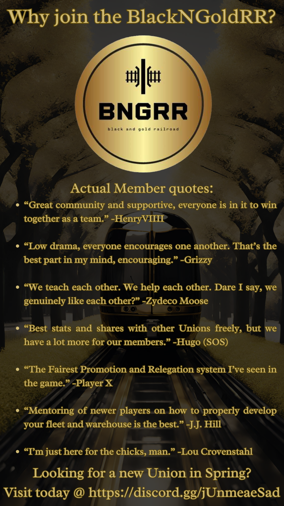

Welcome to Black N Gold Railroad
Black N Gold Railroad is a Union of players who play the Trainstation 2 mobile game from Pixel Federation.
In the Fall season, we adopted a system of promotion and relegation across three rosters (BNGRR Unions) based on performance. The goal was to have two rosters reach the Top 25 (earning a 100-slot train). This goal was achieved!
BEST FINISHES:
- Winter 2022: 12th place
- Spring 2023: 10th place
- Summer 2023: 4th place (BNGRR1), 38th place (BNGRR2)
- Fall 2023: 9th place (BNGRR1), 20th place (BNGRR2) Two full rosters earned 100-slot trains!
- Winter 23-24: Two Unions finished in the Top 15. Two full rosters earned 100-slot trains!
For Spring 2024 we will continue our approach from Winter, again attempting to keep two unions in the Top 25.
If you have any questions, or would like to sign up, join our Discord server, fill out an application and someone will contact you as soon as possible.
Why Join?
